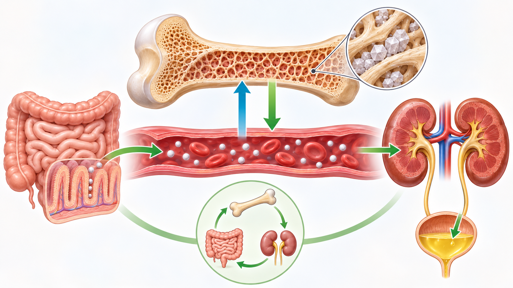

Skelettet bidrar till att reglera kalcium
Nästan allt kalcium i kroppen och en stor del av kroppens fosfat finns lagrat i skelettet, framför allt i form av kalciumfosfat. Samtidigt sker ett fortlöpande utbyte mellan mineralerna i benvävnaden och kalcium och fosfat i kroppsvätskorna.
Kalcium behövs för flera processer utanför skelettet. Det har bland annat betydelse för muskelcellernas sammandragning, frisättning av signalämnen mellan nervceller och blodets koagulation. Därför behöver kalciumhalten i blodplasman hållas inom snäva gränser. Skelettet samverkar med tarmen och njurarna i denna reglering, som också styrs hormonellt. Här ligger fokus på skelettets del i regleringen; den mer detaljerade hormonella kontrollen behandlas i avsnittet om det endokrina systemet.

Illustrationen visar hur skelettet fungerar som kroppens största kalciumförråd och utbyter kalcium med blodet. Tarmen tillför kalcium till blodet, medan njurarna bidrar till att reglera hur mycket som behålls i kroppen eller lämnar den via urinen.
Skelettet förändras genom livet
Benmassan påverkas av flera faktorer, bland annat belastning, ålder och kroppens reglering av kalcium och fosfat. Hos äldre kan benmassan minska. Förlusten kan vara större efter menopaus, då minskad östrogenproduktion bidrar till ökad nedbrytning av benvävnad. Även låg fysisk aktivitet och brist på vitamin D kan bidra till att benmassan minskar.
Om förlusten blir stor kan skelettet bli skörare och risken för frakturer öka. Kunskapen om benvävnadens anpassning till belastning hjälper därför till att förstå hur förändringar i aktivitet och rörelse över tid kan hänga samman med skelettets funktion.
Koppling till arbetsterapi
För arbetsterapeuter är skelettets fysiologi relevant eftersom aktivitet, inaktivitet och belastning hör ihop med kroppens funktion. Kunskap om hur benvävnad förnyas och reagerar på belastning ger en grund för att förstå skelettet som en del av rörelseapparaten och dess betydelse för människans vardagliga aktiviteter.